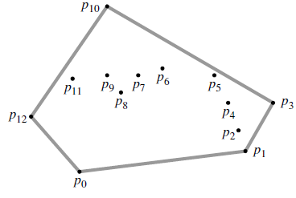
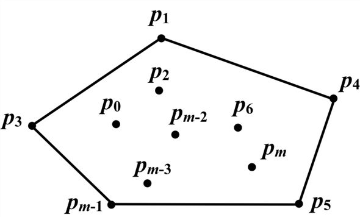
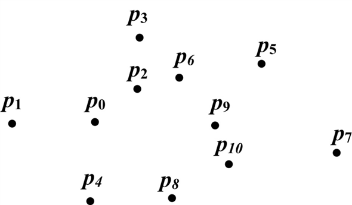
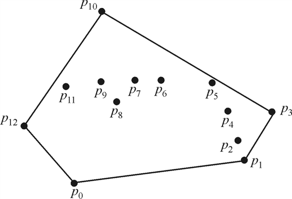
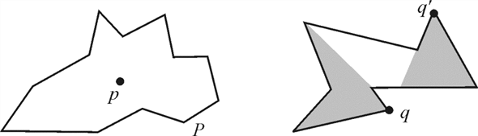

Convex hull is the polygon of the set of pointsin the convex space such that all the points can be covered with a tight rubber band. All the points Q inside the convex must be unique.

Fig: Convex hull
In GRAHAM-SCAN procedure of forming convex hull all the points are arranged in the order of the polar angle made by the points with the reference vertex.
We take a stack in which initially 3 vertices are inserted and then we scan the next vertex and check the polar angle made by the vertex with the vertices left to that vertex. If the angle is non-left turn then pop the top most vertices and insert that vertex in the stack.
This process repeats for each vertex in the space.
Now ifis the point which makes the largest polar angle and is the farthest amongst the one’s which make the polar angle equal to that of. Then it encloses all the points before it, that is, there is no point on right side of it so in the convex hull, point should be included.
In the case ofthe criterion to select it is opposite. Ifis the point which makes smallest polar angle and is the farthest from among the ones who make the same polar angle. It encloses the points on the right side of it and there is no point on left of it making a smaller polar angle, so it lies on boundary of the convex hull is a part of convex hull.
Hence, in the convex hull formed by pointswhich are in
sorted order of the polar angle made by two points with its
references. The vertices andare the
vertices of the Convex-Hull that
is
andare lies on
the boundary of the convex hull.
andare the
vertices of the Convex-Hull that
is
andare lies on
the boundary of the convex hull.
Taking the set of positive numbers and mapping each number in the set to any point in the plane.
To map the numbers in the plane user find the points that arranged in the convex form that is all the points are forming the convex hull.
• So user will try to form the curve where x is the positive number in the set.
• Add to the list of convex points which is to be sorted. One more point is added as an extra point in the convex herewill be a vertex on the boundary of the convex.
• These points must be in anticlockwise order.
From the above method, the points that are returned are in the non-decreasing order of that is all the number x are in there increasing order.
• Similarly user take the set of numbers that are negative and
map these numbers  to.
to.
• After the mapping of the numbers a call to the convex hull is
made, which returns the points in the decreasing order of, that is in
the descending order of.
• Now invert the list of points and take for each x so that user will sort the negative numbers.
Now user have two files in the sorted order which are merged
in time and an algorithm in which is called Convex Hull for the two
times to solve the problem linearly. So an amount of extra work to
sort the list of input numbers is given as:
time and an algorithm in which is called Convex Hull for the two
times to solve the problem linearly. So an amount of extra work to
sort the list of input numbers is given as:

However, it is already known that the sorting time is.
Hence
 is.
is.
It is known that
cannot be
, hence it must be the case that is.
Hence for the computation of convex hull of n vertices by
using the model of computation geometry of which supports addition
multiplication and comparison operation the lower bound is .
.
Consider a set of points.
The convex hull of set  is defined
as the smallest polygon
is defined
as the smallest polygon  such that
each point in is in its
interior or on its boundary. It is denoted by .
such that
each point in is in its
interior or on its boundary. It is denoted by .

Consider two points and such that .
Now prove that if the pair of points are farthest from each other, then they must be the vertices of the convex hull .
Since the pair of points are
farthest from each other, the distance between and
will
be maximum when compared with the distance between any other pair
of points in the set .
That is, if , where
represent the distance between the points  and
,
then the maximum of will be the
distance between and
.
and
,
then the maximum of will be the
distance between and
.
Contrarily, suppose is the
maximum distance, but the pair of points are not the vertices of
the convex hull , then there
exist another point  such that it
is the vertex of the polygon
and
.
Here, it is evident that when
and when
.
such that it
is the vertex of the polygon
and
.
Here, it is evident that when
and when
.
Since and point
is
the vertex of the polygon , then the
polygon is a convex hull.
This is a contradiction to the consideration that the polygon
is
a convex hull .
Hence, the assumption that is the maximum distance, but the pair of points are not the vertices of the convex hull is incorrect.
Therefore, if the pair of points are farthest from each other, then they must be the vertices of the convex hull .
For example: Consider the points in the space as in figure:

In the figure above, the points and are at a
maximum distance from each other. Make the convex hull of these
points.
and are at a
maximum distance from each other. Make the convex hull of these
points.
The convex hull can be made only when the all the points in the
space are covered, which is not possible without covering the
points and.
So, to cover all the points using boundary line, it is necessary
that the points andmust lie on
the boundary of the convex hull. The points that lie on the
boundary of the convex hull are the vertices of the convex
hull.
Hence, in the set of pointsin a convex space, the pair of points at the maximum distance from each other is the vertices of the convex hull .
Convex hull is the polygon of the set of pointsin the convex space such that all the points can be covered with a tight rubber band. All the points Q inside the convex must be unique.

Consider a star shaped polygon

In the star shaped polygon P, there is a point p inside this polygon which is formed by the shadow of the point q that lies on the boundary of the polygon P. The point p can be on the boundary of the polygon P and these points are called the kernel of the P.
In the star shaped polygon the point lies inside or on the boundary of polygon is p, which is the shadow of every point on the boundary of P. The algorithm for the computation of the convex hull for such polygon is as:
1. The set of all the points in the given polygon P isand is the kernel of P.
2. Start a circular sweep from starting from a particular point till it reaches that point
again and repeat step 3 until all points are visited.
3. For point in the set, if is the point farthest from on the ray thenis in the convex hull.
4. Terminate when sweep comes to initial point that is the point repeats.
In this algorithm we visit each vertex in the star shaped polygon so for all the n vertices in the polygon the algorithm takestime for the computation of the convex-hull.
Convex hull is the polygon of the set of pointsin the convex space such that all the points can be covered with a tight rubber band. All the points Q inside the convex must be unique.
Convex hull can be formed by using GRAHAM-SCAN procedure which uses the process of “rotational sweep” that is processing the vertices in the order of their polar angles formed with the reference vertex.
For on-line convex hull problem the Graham’s scan algorithm will run in for n number of vertices updated in the convex hull. In this process no sorting of vertices is required because we are adding the nodes one by one and updating the convex hull after adding one vertex or point.
Now for running this algorithm intime,
consider the convex hullof points then
the points that are already added in the convex hull will be in
anticlockwise sequence of the angle they made with their reference
node.
then
the points that are already added in the convex hull will be in
anticlockwise sequence of the angle they made with their reference
node.
Now the next node encountered and we have to add this to convex hull for this we assume thatis in the interior region of .Thenis equal to.
To detect this case we can use the fact that if are the points of in anti-clockwise order from the lowest one, then we can say that for every, involves a left-turn here we do performin a wraparound style, with.
In the alternate fashion suppose that is on the exterior of for this assume that convex hullconsist of and one uninterrupted part from. Normally this segment will be consisting of majorly the already present points on.
So the left or right turns ofwith respect to could be interpreted as follows:
While taking points of from the last (bottom) pointand further, consider i be the first point such that involves a right turn.
Subsequent to finding the i defined above, let j be the first index after i such that involves a left turn. It is easy to argue that is always a left turn from all the way round to.The convex hull is equal to.
In the solution, the updation of to, required a scanning of points (which are maximum) in the linear order. The extra work done that is checking for the left/right turn on each node requires a constant time for each node. Hence the overall time to update for the new pointtakes time.
Two conditions can occur at this point:
1. If is inside, that is belongs to. It is quite simple to detect it in linear time by going through the points of in clockwise order and determining if is always on the right side of an edge, in this case.
2. If is outside, that is, not belongs tothen it is done by discovering the two inclined lines fromto.
INCREMENTAL-CONVEX-HULL(S)
//for loop is used to traverse each point of convex hull
1. for i=4 to n
2. j ← Index of the point which is at the right end of CH
// find the upper tangency point
3. u = j
4. while pih4 is not tangent to CH
5. if u ≠ j
6. remove h4 from CH
7. u = u -1
// find the lower tangency point
8. i = j
9. while pihl is not tangent to CH
10. if 
11. remove hi from CH
12. 
13. INSERT pi in CH between hu and hi
Analysis of Algorithm:
• In this algorithm the addition of the new node takes time so for
n node the total is .
.
• The complexity of this algorithm is dependent on sorting and
that’s why the upper bound will be due to sorting and so the
complexity is .
.
Hence, the complexity of above algorithm will be
.